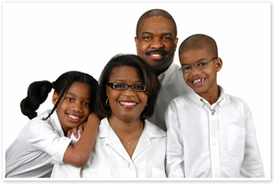

African American Family Services

OUR BOARD AND PURPOSE

African American Family Services is a nonprofit community clinic governed by a volunteer Board of Directors. Our mission is to help the African American individual, family and community to reach a greater state of well-being through the delivery of community based, culturally specific chemical health, mental health and family preservation services.
Board members are selected on the basis of their commitment to the vision and mission of the organization. African American Family Services board members are expected to serve on at least one committee or task force as well as the board. The standing committees are Executive, Finance, Fundraising, and Program Innovation. Our board members include consumers, community leaders, professionals in the health care field and nonprofit and for profit leaders.
The African American Family Services Board of Directors respects and values the diversity of all its clients, staff, and board members. The board of directors defines diversity as individuality. This individuality includes a wide spectrum of attributes, such as personal style, age, race, gender, ethnic heritage, sexual orientation, language, physical ability, religious affiliation, family, citizenship status, socio-economic circumstances, education, political affiliation and life experience.
The ability of the board of directors to know its clients depends on the board members’ understanding of the diverse communities that the agency serves. An inclusive environment in which a full range of ideas and information can be exchanged, leading to fuller and richer board decisions that will best serve the clinic and its patients, can be obtained through having a diverse board of directors. To be successful, African American Family Services must fully integrate competency into the clinic’s culture, standard operating procedures and processes. A diverse board of directors will aid in this process and will help ensure the on-going and future growth and success of African American Family Services.
Becoming a Board Member
There are many reasons individuals become board members. As a board member your skills will be used to set an innovative course for this vibrant organization. You will be involved in developing the public policy direction of the agency and influencing the legislative process as it concerns the African American community’s wellness and recovery. Channel your passion for the African American community by getting involved on a new level and have a rewarding and dynamic volunteer experience.
We invite you to consider serving on our board.
For more information contact:
AAFS’ Advancement Department
advancement@aafs.net
CURRENT BOARD MEMBERS
Brian B. Bell - brian.b.bell@gmail.com
Freddie L. English-Davis - freddie.english63@gmail.com
Rebecca I. Fabunmi - rebecca.fabunmi@gmail.com
Patricia Wamser - pwamser@comcast.net
Odell Wilson, III - odell_wilson@mnp.uscourts.gov
Kiley Demery - kiley.demery@wellsfargoadvisors.com